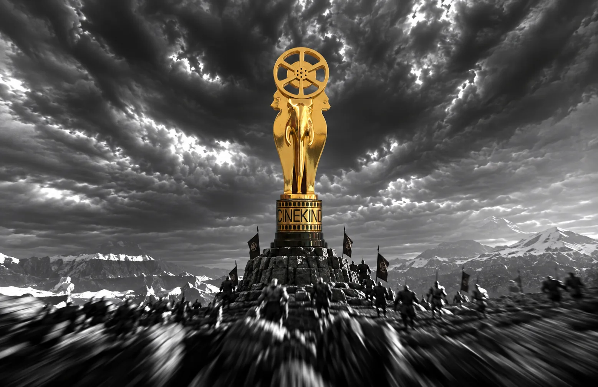
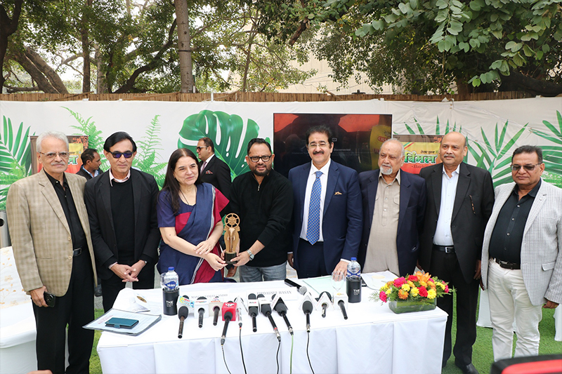
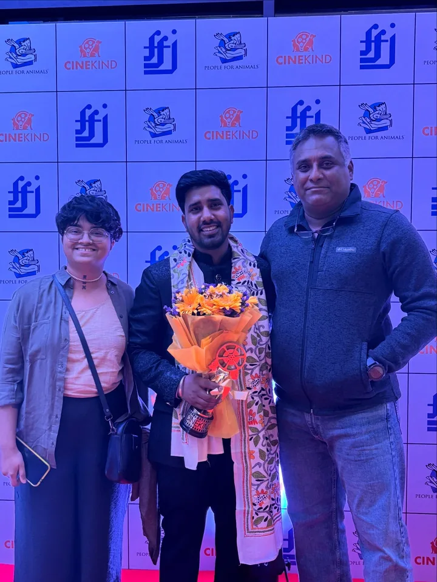
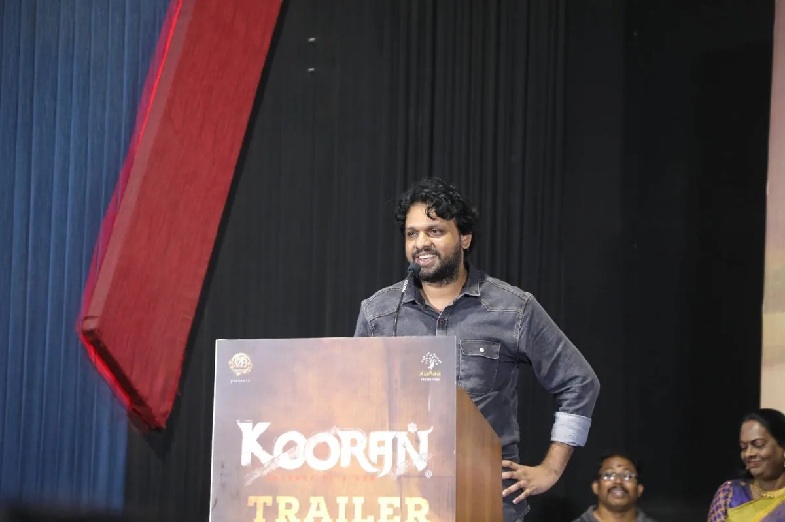
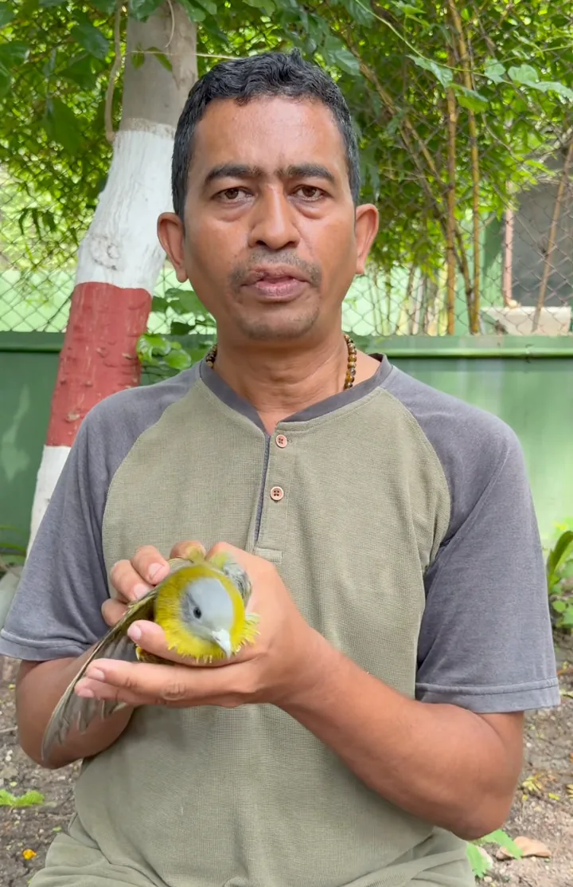

People for Animals and the Film Federation of India present
Enter Anant AmbaniChange of Heart / Heart of Gold
Anant AmbaniChange of Heart / Heart of Gold Amit RaiDirector of Change
Amit RaiDirector of Change Nitin JainVoice of the Voiceless
Nitin JainVoice of the Voiceless John AbrahamChampion for Animals
John AbrahamChampion for Animals Raveena TandonKindness Catalyst
Raveena TandonKindness Catalyst Wamiqa GabbiBeacon of Hope
Wamiqa GabbiBeacon of Hope Kalyan VarmaKindness in Frame
Kalyan VarmaKindness in Frame Riteish and Genelia DeshmukhInnovation for Compassion
Riteish and Genelia DeshmukhInnovation for Compassion YODA: Priya Hebbar and Pooja SakpalCompassionate Care
YODA: Priya Hebbar and Pooja SakpalCompassionate Care Nikhar JunejaRay of Sunshine
Nikhar JunejaRay of Sunshine Rajan ShahiValues in Action
Rajan ShahiValues in Action- Anant AmbaniChange of Heart / Heart of Gold
- Amit RaiDirector of Change
- Nitin JainVoice of the Voiceless
- John AbrahamChampion for Animals
- Raveena TandonKindness Catalyst
- Wamiqa GabbiBeacon of Hope
- Kalyan VarmaKindness in Frame
- Riteish and Genelia DeshmukhInnovation for Compassion
- YODA: Priya Hebbar and Pooja SakpalCompassionate Care
- Nikhar JunejaRay of Sunshine
- Rajan ShahiValues in Action
- Anant AmbaniChange of Heart / Heart of Gold
- Amit RaiDirector of Change
- Nitin JainVoice of the Voiceless
- John AbrahamChampion for Animals
- Raveena TandonKindness Catalyst
- Wamiqa GabbiBeacon of Hope
- Kalyan VarmaKindness in Frame
- Riteish and Genelia DeshmukhInnovation for Compassion
- YODA: Priya Hebbar and Pooja SakpalCompassionate Care
- Nikhar JunejaRay of Sunshine
- Rajan ShahiValues in Action
CineKind 2026
The national award for films that choose kindness.
Eleven honours. Mumbai, 4 October, World Animal Day.
This year
The 2026 honours.
Announced ahead of Mumbai, 4 October 2026. Eleven honours for films and people who leave the frame kinder than they found it.
- 01Change of Heart / Heart of GoldAnant Ambani
- 02Director of ChangeAmit Rai
- 03Voice of the VoicelessNitin Jain
- 04Champion for AnimalsJohn Abraham
- 05Kindness CatalystRaveena Tandon
- 06Beacon of HopeWamiqa Gabbi
- 07Kindness in FrameKalyan Varma
- 08Innovation for CompassionRiteish Deshmukh and Genelia Deshmukh
- 09Compassionate CareYODA (Priya Hebbar and Pooja Sakpal)
- 10Ray of SunshineNikhar Juneja
- 11Values in ActionRajan Shahi

The trophies at the inaugural edition · Kolkata 2025
The CineKind trophy
A sculpture by Paresh Maity.
Each trophy is a sculpture by Paresh Maity. Winners are chosen by the CineKind National Awards Committee.
About
What the award is.
A roll of honours, given once a year by the Film Federation of India with People for Animals, for films and people who leave the frame kinder than they found it.
Presented by
FFI with PFA
First edition
Kolkata 2025
Date
20 December
Honours
21 across two editions
Before the camera rolls
Filming a real animal needs permission first.
A real animal in a directed shot needs pre-shoot permission from the Animal Welfare Board of India. CineKind puts the process in plain language, before a production learns it too late.
What is in the scene?
Select the closest description of the scene.
Next year
2027. Nominations are open.
The third edition is already looking for its honourees. If a film, a filmmaker, a journalist or a caregiver left the frame kinder than they found it, put their name in front of the CineKind National Awards Committee. Every nomination is read.
Act II · The inaugural edition
2025
Ten honours, the first roll call, the first trophies. The whole inaugural edition, kept as it happened - one act back.
Roll of honour
The ten honours.
Every honour from the inaugural edition, called in this order on the night. Filmmakers and actors, a journalist, a scientist, a shelter and a voice: the whole width of the case for animals.
-
01 CineKind Compassion AwardDr Harsha AtmakuriMaa Ka Doodh

-
02 Director of ChangeDolly Vyas Ahuja and Aryeman RamsayThe Land of Ahimsa

-
03 Actor for KindnessRupali GangulyAnimal protection and adoption

-
04 Cinematic Impact for Animal WelfareNirmal VermaKeeper of the Last Herd

-
05 Kindness in FrameNitin Vemupati and S. A. ChandrasekharKooran

-
06 Voice for the VoicelessKushagra DixitTimes of India

-
07 Innovation for CompassionPooja BhattFish Eye Network

-
08 Visual Storyteller for AnimalsDr Sandhya SekarMongabay India

-
09 Guardians of KindnessAshish GoswamiPFA Wardha

-
10 Humane InfluenceMohit ChauhanAnimal welfare advocacy

Why each was honoured, in their own record: Maa Ka Doodh, The Land of Ahimsa, Rupali Ganguly, Pooja Bhatt, Dr Sandhya Sekar and Mohit Chauhan.
On stage
The ceremony.
Kolkata, 20 December 2025. Ten honours presented on one stage, the trophies by Paresh Maity on the table, and a national film body putting kindness on its own record for the first time.
Ceremony photographs by the Film Federation of India, from the CineKind Award 2025 event page. Used with the Federation’s permission as co-presenter of the award.
The record
On the national record.
The inaugural awards put humane storytelling on the national film industry's record. Explore the official event archive or read the government broadcaster's report from the ceremony.
Film Federation of India with People for Animals · Inaugural edition · Kolkata